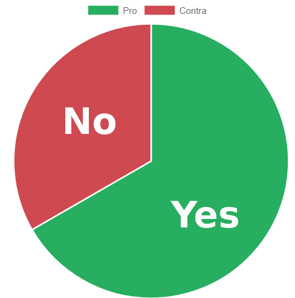

1. Overview
Navigate easily through your different argumentations
and see the results of former argumentations.
Should I buy a dog?
Should I read more books?
Should I study in Berlin?
Should I watch the news?
2. Sort Pro/Contra
Sort your arguments by Pro and Contra
| Pro |
Con |
| A dog forces me to go out and be fit. |
A dog is expensive. |
| A dog can keep me company. |
A dog causes dirt I have to clean up. |
| A dog can protect me. |
A dog barks. |
3. Sort your arguments according to their strength
As you know not all arguments have the same strength, classify them in three
different strengths, visualized in pleasing color differences.
4. Evaluate your Arguments"
Let our App help you with your choice through evaluating
your arguments and displaying them in different charts and stats.
